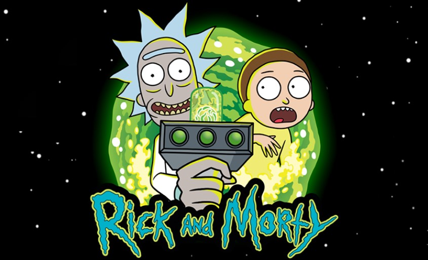

<!DOCTYPE html>
<html lang="en"></html>
<html>
  <head>
    <meta charset="utf-8">
     <!-- content="width=device-width el ancho de la pagina web es igual al ancho de la pantalla -->
    <meta name="viewport" content="width=device-width">
    <link rel="shortcut icon"  href="images/portalIcon.jpg">
    <title>Data Lovers</title>
    <link rel="preconnect" href="https://fonts.gstatic.com">
    <link href="https://fonts.googleapis.com/css2?family=Roboto:wght@700&display=swap" rel="stylesheet">
    <link rel="stylesheet" href="https://cdnjs.cloudflare.com/ajax/libs/font-awesome/4.7.0/css/font-awesome.min.css"> <!--sitio web de donde salen los iconos de redes sociales-->
    <link rel="stylesheet" href="style.css" />
  </head>

 
  <body class="background" >

                                                                         <!-- start Home  -->
    <section id="homeSection">
      <figure class="home">
         
         <button id="btnFirst" class="btnFirst">Start</button>
      </figure>
    </section>

                                                                               <!--header section -->
    <header class="hide" id="logoHeader">
      <section class="boxName" id="boxName" >
        
        
      </section>
    </header>

                                                                        <!--principal nav section -->
    

    <nav class="hide barNavegation" id="nav">

      <section id="advancedFilter">
        <p><b>Filter:</b></p>
        <p>Status</p>
        <select id = "estado_vida">
          <option>--Select--</option>
          <option>Alive</option>
          <option>Dead</option>
        </select> </br>
        <p>Species</p>
        <select id = "species">
          <option>--Select--</option>
          <option>Human</option>
          <option>Alien</option>
          <option>Animal</option>
          <option>Vampire</option>
          <option>Robot</option>
        </select> </br>
        <p>Gender</p>
          <select id = "gender">
          <option>--Select--</option>
          <option>Male</option>
          <option>Female</option>
          <option>Unknown</option>
          <option>Genderless</option>
        </select></br>
        <p>Origin</p>
        </select>
          <select id = "origin">
          <option>--Select--</option>
          <option>Earth (Replacement Dimension)</option>
          <option>Abadango</option>
          <option>Earth (C-137)</option>
          <option>Signus 5 Expanse</option>
          <option>Post-Apocalyptic Earth</option>
          <option>Purge Planet</option>
          <option>Venzenulon 7</option>
          <option>Bepis 9</option>
          <option>Earth (C-500A)</option>
          <option>Earth (Evil Rick's Target Dimension)</option>
          <option>Nuptia 4</option>
          <option>Fantasy World</option>
          <option>Bird World</option>
          <option>Rick's Battery Microverse</option>
          <option>The Menagerie</option>
          <option>Earth (K-83)</option>
          <option>Hideout Planet</option>
          <option>Cronenberg Earth</option>
          <option>Giant's Town</option>
          <option>Unity's Planet</option>
          <option>Anatomy Park</option>
          <option>Gromflom Prime</option>
          <option>Earth (J19ζ7)</option>
          <option>Roy: A Life Well Lived</option>
          <option>Eric Stoltz Mask Eart</option>
          <option>Glaagablaaga</option>
          <option>Gazorpazorp</option>
          <option>Resort Plane</option>
          <option>Hamster in Butt World</option>
          <option>Earth (Giant Telepathic Spiders Dimension</option>
          <option>Alphabetrium</option>
          <option>Earth (5-126</option>
          <option>Krootabulon</option>
          <option>Pluto</option>
          <option>Zeep Xanflorp's Miniverse</option>
          <option>Larva Alien's Planet</option>
          <option>Mr. Goldenfold's dream</option>
          <option>Earth (K-22)</option>
          <option>Mr. Meeseeks Box</option>
          <option>Mega Gargantuan Kingdom</option>
          <option>Gear World</option>
          <option>Earth (D-99)</option>
          <option>Earth (D716)</option>
          <option>Earth (D716-B)</option>
          <option>Earth (D716-C)</option>
          <option>Earth (J-22)</option>
          <option>Planet Squanch</option>
          <option>Detoxifier</option>
          <option>Kyle's Teenyverse</option>
          <option>Trunk World</option>
          <option>Plopstar</option>
          <option>Girvonesk</option>
          <option>Snuffles' Dream</option>
          <option>Interdimensional Cable</option>
          <option>Earth (Phone Dimension)</option>
          <option>Earth (Pizza Dimension)</option>
          <option>Greasy Grandma World</option>
          <option>Earth (Chair Dimension)</option>
          <option>Testicle Monster Dimension</option>
          <option>Árboles Mentirosos</option>
          <option>Citadel of Ricks</option>
          <option>Unknown</option>
        </select></br>
        <p>Episode</p>
  
        <select id="episodes">
          <option>--Select--</option>
          
        </select>
      </section>


      <ul class="buttonsNavegation">
        <!-- Attribute Values
          _blank	Opens the linked document in a new window or tab
           -->
          <li class="boxBarNavegation line">
            <a class="barNavegation" id="aboutbutton" href="#">About</a>
          </li>
          <li class="boxBarNavegation line">
            <a class="barNavegation" href="#">Statistics</a>
          </li>
          <li class="boxBarNavegation">
            <a class="barNavegation" href="https://www.adultswim.com/streams/rick-and-morty" target="_blank">Watch online</a>
          </li>
      </ul>
    </nav>
                                                                    <!--search & order section -->    
    <nav>
      <section class="nameOrder hide" id="subheaderSection">
        <section  class="subheaderSection">
          <input type="search" placeHolder="Search by name" id="searchByName" src= "images/assets/lupa.png" autocomplete="off" ></input>
        </section>

        <select class="subheaderSection" id="order">
          <option value="" hidden selected> Order </option>
          <option value="orderAtoZ" id="orderAtoZ">A - Z</option>
          <option value="orderZtoA" id="orderZtoA">Z - A</option>
          <option value="none" id="none">By default</option>
        </select>
      </section>
    </nav>


    
                                                                 <!--Finally, Main character section -->   
    <section id="charactersSection" class="hide">
      <main class="mainContainer" id="mainContainer">
        <!-- Cards :D -->
        <article class="cards listCharacters " id="cards">
          <!-- <figure class="card">
              
              <figcaption>Rick</figcaption>
            </figure>-->
        </article>


       <!-- Pagination -->
       <section id="buttonsContainer" class="buttonsContainer active"></section>
       <!-- character description  -->

       <a href="#myModal"></a>
       <section id = "myModal" class="modal">
         <section class="modalContent">
           <p id= "xClose" class="close">X</p>
           <section id="informationModal">
           
             <section id="paragraphModal">
             <h2>IDENTIFICATION CARD</h2>
             <p id ="statusModal">Status:</p>
             <p id="speciesModal">Species:</p>
             <p id="typeModal">Type:</p>
             <p id="genderModal">Gender:</p>
             <p id="originModal">Origin:</p>
             <p id="locationModal">Location:</p>
             <p id="episodeModal">Episode:</p>
             </section>
           </section>
           <h3 id ="nameModal"></h3>
         </section>
       </section>

      </main>
    </section>
                                                              <!--oothers about and stat -->
    <section id="aboutSection" class="hide">
      
      <h1>Rick and Morty</h1>
      
      <p>Rick and Morty is an American animated television series created by Dan Harmon and Justin Roiland that premiered on December 2, 2013 on Cartoon Network's Adult Swim programming block. In Canada, it premiered on January 10, 2016 on the Canadian version of Cartoon Network's Adult Swim programming block.</p>
      <p>The show's first season consists of 11 twenty-two minute episodes. After airing the first six episodes, [adult swim] renewed the show for a second season, consisting of 10 twenty-two minute episodes. The show was renewed for a third season, consisting of 10 twenty-two minute episodes that aired in the summer of 2017. As of Fall of 2019 Rick and Morty came back with a fourth season airing ten episodes with the first half of the season being air in 2019 and the second half after new years.</p>
      <h2>Plot</h2>
      <p>After going missing for nearly 20 years, Rick Sanchez suddenly arrives at his daughter Beth’s doorstep looking to move in with her and her family. Beth welcomes him with open arms, but her unremarkable husband Jerry isn’t too thrilled about the tearful reunion as Rick’s arrival serves to shake things up quite a bit around the household. Rick converts the garage into his personal laboratory and gets to work on all sorts of dangerous sci-fi gadgets and contraptions. That wouldn’t be so bad if not for the fact that Rick continues to involve his grandchildren Morty and Summer in his insane adventures. With the exception of the Pilot episode, each episode ends with a post-credits scene.</p>
      <h2>Characters</h2>
      <h3>Main</h3>
      <ul>
        <li>
          <h4>Rick Sanchez</h4>
          <p> A genius scientist and alcoholic whose inventions and experiments serve as the basis for the episodes. The grandfather of Morty Smith and Summer Smith, and the father of Beth. Rick was absent from the family for years, until he finally returned before the Pilot episode to live with the Smith family, much to the disapproval of Jerry. He currently resides in the garage of the Smith house where his entire laboratory is based. Here, he builds new inventions, travels to other dimensions, and tests things out on forms of alien life. </p>
        </li>
        <li>
          <h4>Morty Smith </h4>
          <p>Rick's impressionable and socially awkward teenage grandson who is often dragged along on his grandfather's escapades. Morty is a wimpy and nervous wreck who desperately tries to keep his sanity when taken on the bizarre and terrifyingly mind-bending adventures that Rick takes him on, which is already big enough of a problem as he already struggles to fit in at his own high school. </p>
        </li>
        <li>
          <h4>Jerry Smith</h4>
          <p> Morty's insecure father, whose disapproval of Rick's influence on Morty only deepens his marital troubles with Beth. Jerry constantly finds himself to be in a failing marriage with his wife as they always argue and never express the love for each other that most parents do. </p>
        </li>
        <li>
          <h4>Beth Smith</h4>
          <p>Morty's holier-than-thou mother who is a cardiac surgeon for horses. Beth seems to have problems in her marriage with Jerry and usually considers leaving him for another guy.</p>
        </li>
        <li>
          <h4>Summer Smith</h4>
          <p>Morty's angst-ridden older sister who occasionally joins Rick on his adventures. She only cares about her friends and social life at school and is easily annoyed by her family, though she sometimes becomes jealous of Morty's relationship with Rick.
          </p>
        </li>
      </ul>
      <a href="https://rickandmorty.fandom.com/wiki/Rick_and_Morty_(TV_series)" target="_blank">Fuente</a>


    </section>   
    
    <section id="statisticsSection" class="hide">


    </section>

                                                                     <!--footer section -->
    <footer class="hide" id="footerSection">
       <ul class="socialBars">
        <!-- Attribute Values
          _blank	Opens the linked document in a new window or tab
           -->
          <li class=""><a href="https://www.facebook.com/RickandMorty/"  target="_blank" class="fa fa-facebook" ></a></li>
          <li class=""><a href="https://twitter.com/rickandmorty"  target="_blank" class="fa fa-twitter-square" href="#"></a></li>
          <li class=""><a href="https://www.instagram.com/rickandmorty/?hl=es" target="_blank" class="fa fa-instagram"  ></a></li>
      </ul>
      <section class="allRightsReserved">
        
        <span >Derechos Reservados</span>
      </section>
    </footer>
    <script 
    src="main.js" type="module" 
    document.addEventListener("DOMContentLoaded", drawCharactersPage);
    
    ></script>
  </body>
</html>